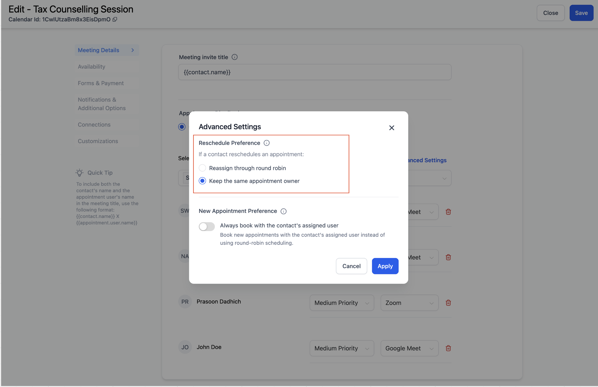
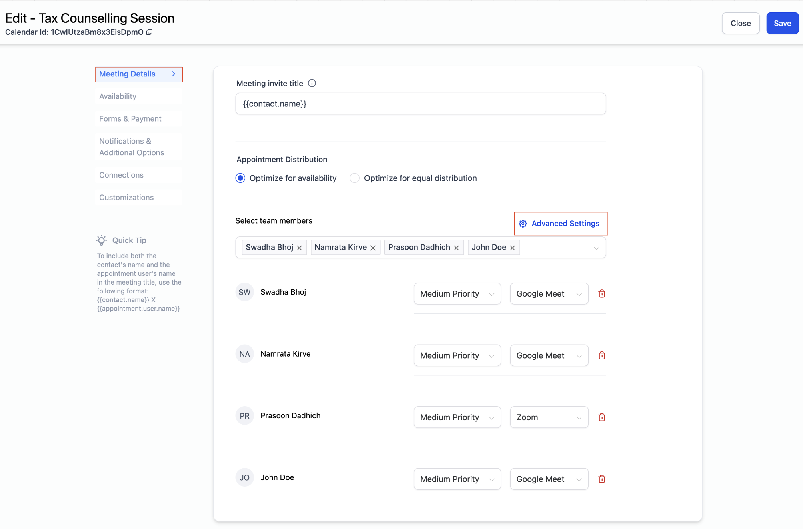
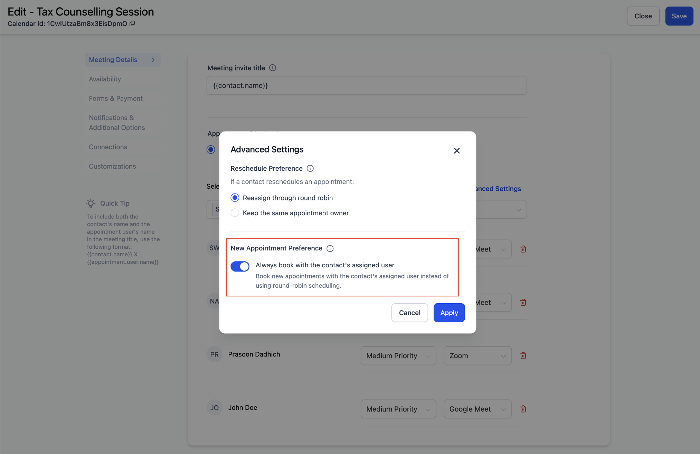
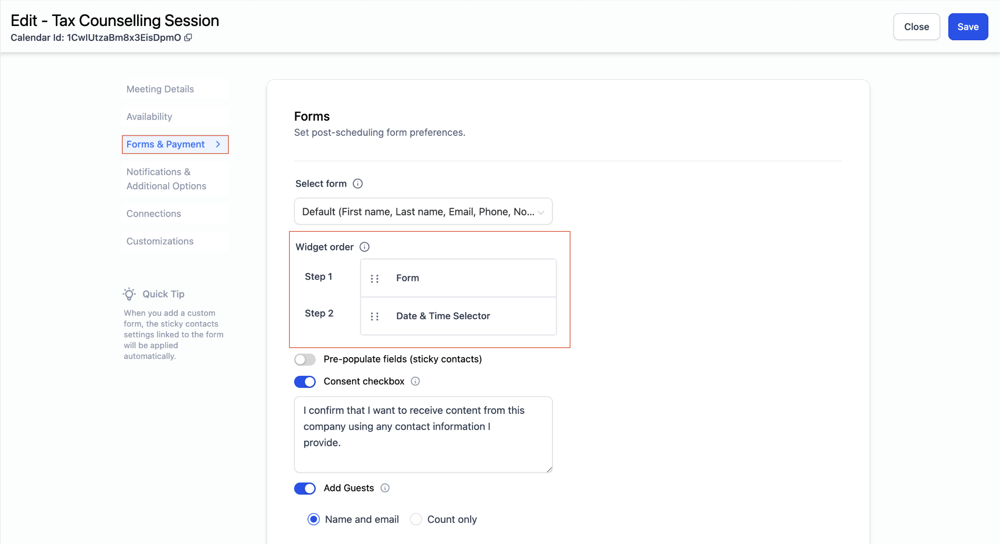
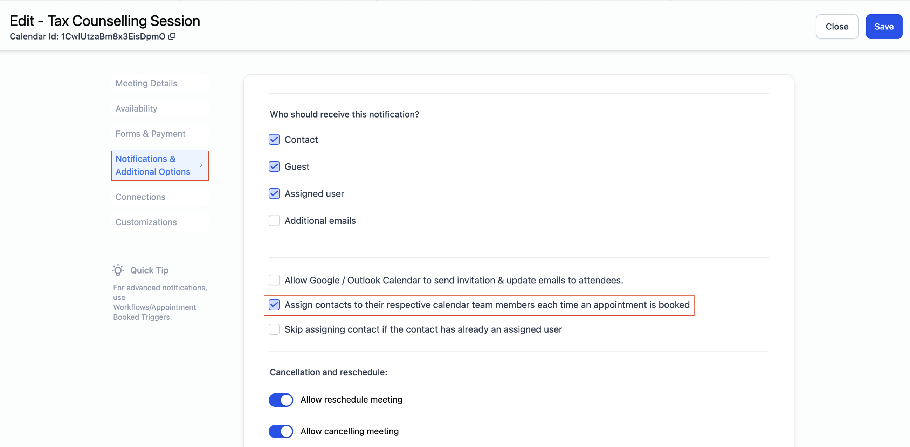
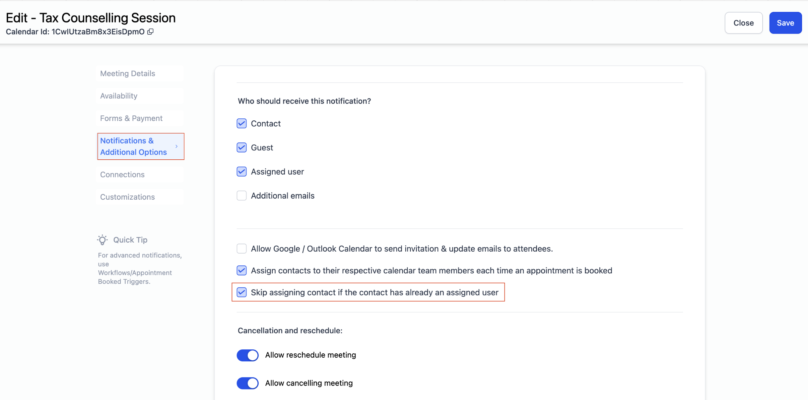

TABLE OF CONTENTS
- Overview
- Reschedule Preference
- How It Works:
- New Appointment Preference: Always Book with the Contact's Assigned User
- Points to Note Before Using This Feature:
Overview
You can now configure which team member should be assigned to an appointment in a round-robin calendar. You have options for reschedule preferences and new appointment preferences.
Reschedule Preference: Choose who the appointment should be assigned to when a contact reschedules using the booking widget.
New Appointment Preference: Choose whether new appointments should always be booked with the contact's assigned user.
Appointment Owner
The appointment owner is the user who is assigned to a particular appointment.
Assigned User
The assigned user is the contact's assigned user, which you can check in the contact page.
Reschedule Preference
You can now decide who should be assigned to a rescheduled appointment when a contact reschedules using the booking widget. You can either reassign through round-robin scheduling or keep the same appointment owner every time. This ensures that the same user gets assigned to the rescheduled appointment.
These settings can be found in any Round Robin Calendar > Meeting Details > Team Members > Advanced Settings

How It Works:
Reassign through round robin: If you choose to reassign through round-robin scheduling, the rescheduled appointment will be assigned to any team member based on the round-robin algorithm.
Keep Same Appointment Owner: If you configure the setting to keep the same appointment owner, then when a contact reschedules an appointment using the reschedule link, only the original appointment owner's slots will be shown on the booking widget.
Example: If User A was the original appointment owner and the contact reschedules the appointment, only User A's available slots will be displayed for rescheduling.
Note: You can turn off 'Allow Staff Selection' to prevent bookers from changing the staff member on the booking widget.
New Appointment Preference: Always Book with the Contact's Assigned User
This feature lets you book new appointments with the contact's assigned user instead of using round-robin scheduling. You can determine if you want the contact to be booked with the same user every time the contact schedules a new appointment.
These settings can be found in any Round Robin Calendar > Meeting Details > Team Members > Advanced Settings


Prerequisites:
The form must be first in the booking widget order. You can reorder the widget from the Forms & Payments tab in order to use this feature.

How It Works:
When the form is first, the contact fills out their information. Based on the contact's email or phone number, the system checks who the contact's assigned user is. There are three possible scenarios:
- No Assigned User: If the contact has no assigned user, the appointment is assigned through round-robin scheduling.
- Assigned User not part of the Calendar: If the contact has an assigned user (e.g., User A) who is not part of the calendar, the appointment is assigned through round-robin scheduling among the calendar team members.
- Assigned User part of the Calendar: If the contact has an assigned user (e.g., User A) who is part of the calendar, User A's slots are shown in the booking widget, and the appointment is booked with User A.
If this setting is turned off, every new appointment will be scheduled through round-robin scheduling.
Points to Note Before Using This Feature:
- Tip 1: You can turn off 'Allow Staff Selection' to prevent bookers from changing the staff member on the booking widget.
- Tip 2: For a seamless experience, ensure consistent settings across all your calendars to prevent any conflicts in updating the contact's assigned user.
- Tip 3: Confirm your settings for assignment of users from Notifications & Additional Options.
Setting 1
"Assign contacts to their respective calendar team members each time an appointment is booked"

How it works:
Whenever an appointment is booked, the contact's assigned user is updated to the user assigned to the appointment.
For example, if the first appointment is with User A, the contact's assigned user is updated to User A. If the second appointment is with User B, the contact's assigned user is updated to User B, and so on.
Setting 2
"Skip assigning contact if contact already has an assigned user:"

How it works:
If a contact already has User A as their assigned user, this setting ensures that the contact's assigned user remains User A, regardless of who is booked for subsequent appointments.